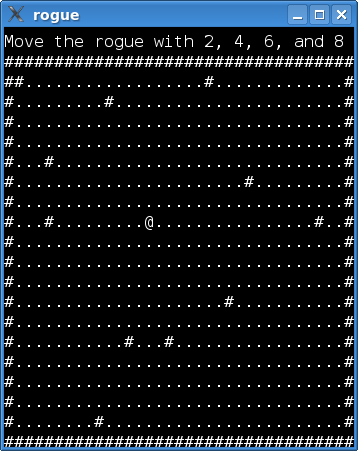
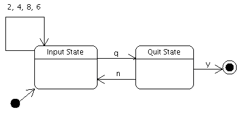

Rogue
The Rogue example shows how to use the Qt state machine for event handling.

This example implements a simple text based game. Do you see the @ in the screenshot? That's you, the rogue. The # characters are walls, and the dots represent floor. In a real game, other ASCII characters would represent all kinds of objects and creatures, for instance, ancient dragons (Ds) or food rations (%s). But let's not get carried away. In this game, the rogue is simply running around in an empty room.
The rogue is moved with the keypad (2, 4, 8, 6). That aside, we have implemented a quit command that triggers if the player types q. The player is then asked if he/she really wants to quit.
Most games have commands that need more than one key press (we think of consecutive presses, i.e., not of several keys being pressed at the same time). In this game, only the quit command falls under this category, but for the sake of argument, let's imagine a fully-fledged game with a rich set of commands. If we were to implement these by catching key events in keyPressEvent(), we would have to keep a lot of class member variables to track the sequence of keys already typed (or find some other way of deducing the current state of a command). This can easily lead to spaghetti, which is–as we all well know, I'm sure–unpleasant. With a state machine, on the other hand, separate states can wait for a single key press, and that makes our lives a lot simpler.
The example consists of two classes:
Windowdraws the text display of the game and sets up the state machine. The window also has a status bar above the area in which the rouge moves.MovementTransitionis a transition that carries out a single move of the rogue.
Before we embark on a code walkthrough, it is necessary to take a closer look at the design of the machine. Here is a state chart that shows what we want to achieve:

The input state waits for a key press to start a new command. When receiving a key it recognizes, it transitions to one of the two commands of the game; though, as we will see, movement is handled by the transition itself. The quit state waits for the player to answer yes or no (by typing y or n) when asked whether he/she really wants to quit the game.
The chart demonstrates how we use one state to wait for a single key press. The press received may trigger one of the transitions connected to the state.
Window Class Definition
The Window class is a widget that draws the text display of the game. It also sets up the state machine, i.e., creates and connects the states in the machine. It is the key events from this widget that are used by the machine.
class Window : public QWidget { Q_OBJECT Q_PROPERTY(QString status READ status WRITE setStatus) public: enum Direction { Up, Down, Left, Right }; Window(); void movePlayer(Direction direction); void setStatus(const QString &status); QString status() const; QSize sizeHint() const override; protected: void paintEvent(QPaintEvent *event) override;
Direction specifies the direction in which the rogue is to move. We use this in movePlayer(), which moves the rogue and repaints the window. The game has a status line above the area in which the rogue moves. The status property contains the text of this line. We use a property because the QState class allows setting any Qt property when entered. More on this later.
private: void buildMachine(); void setupMap(); static constexpr int WIDTH = 35; static constexpr int HEIGHT = 20; QChar map[WIDTH][HEIGHT]; int pX = 5; int pY = 5; QStateMachine *machine; QString myStatus; };
The map is an array with the characters that are currently displayed. We set up the array in setupMap(), and update it when the rogue is moved. pX and pY is the current position of the rogue, initially set to (5, 5). WIDTH and HEIGHT are constants specifying the dimensions of the map.
The paintEvent() function is left out of this walkthrough. We also do not discuss other code that does not concern the state machine (the setupMap(), status(), setStatus(), movePlayer(), and sizeHint() functions). If you wish to take a look at the code, click on the link for the window.cpp file at the top of this page.
Window Class Implementation
Here is the constructor of Window:
Window::Window()
{
...
setupMap();
buildMachine();
}
Here we set up the map and statemachine. Let's proceed with the buildMachine() function:
void Window::buildMachine() { machine = new QStateMachine; auto inputState = new QState(machine); inputState->assignProperty(this, "status", "Move the rogue with 2, 4, 6, and 8"); auto transition = new MovementTransition(this); inputState->addTransition(transition);
We enter inputState when the machine is started and from the quitState if the user wants to continue playing. We then set the status to a helpful reminder of how to play the game.
First, the Movement transition is added to the input state. This will enable the rogue to be moved with the keypad. Notice that we don't set a target state for the movement transition. This will cause the transition to be triggered (and the onTransition() function to be invoked), but the machine will not leave the inputState. If we had set inputState as the target state, we would first have left and then entered the inputState again.
auto quitState = new QState(machine);
quitState->assignProperty(this, "status", "Really quit(y/n)?");
auto yesTransition = new QKeyEventTransition(this, QEvent::KeyPress, Qt::Key_Y);
yesTransition->setTargetState(new QFinalState(machine));
quitState->addTransition(yesTransition);
auto noTransition = new QKeyEventTransition(this, QEvent::KeyPress, Qt::Key_N);
noTransition->setTargetState(inputState);
quitState->addTransition(noTransition);
When we enter quitState, we update the status bar of the window.
QKeyEventTransition is a utility class that removes the hassle of implementing transitions for QKeyEvents. We simply need to specify the key on which the transition should trigger and the target state of the transition.
auto quitTransition = new QKeyEventTransition(this, QEvent::KeyPress, Qt::Key_Q);
quitTransition->setTargetState(quitState);
inputState->addTransition(quitTransition);
The transition from inputState allows triggering the quit state when the player types q.
machine->setInitialState(inputState);
connect(machine, &QStateMachine::finished, qApp, &QApplication::quit);
machine->start();
}
The machine is set up, so it's time to start it.
The MovementTransition Class
MovementTransition is triggered when the player request the rogue to be moved (by typing 2, 4, 6, or 8) when the machine is in the inputState.
class MovementTransition : public QEventTransition { Q_OBJECT public: explicit MovementTransition(Window *window) : QEventTransition(window, QEvent::KeyPress), window(window) { }
In the constructor, we tell QEventTransition to only send KeyPress events to the eventTest() function:
protected: bool eventTest(QEvent *event) override { if (event->type() == QEvent::StateMachineWrapped && static_cast<QStateMachine::WrappedEvent *>(event)->event()->type() == QEvent::KeyPress) { auto wrappedEvent = static_cast<QStateMachine::WrappedEvent *>(event)->event(); auto keyEvent = static_cast<QKeyEvent *>(wrappedEvent); int key = keyEvent->key(); return key == Qt::Key_2 || key == Qt::Key_8 || key == Qt::Key_6 || key == Qt::Key_4 || key == Qt::Key_Down || key == Qt::Key_Up || key == Qt::Key_Right || key == Qt::Key_Left; } return false; }
The KeyPress events come wrapped in QStateMachine::WrappedEvents. event must be confirmed to be a wrapped event because Qt uses other events internally. After that, it is simply a matter of checking which key has been pressed.
Let's move on to the onTransition() function:
void onTransition(QEvent *event) override {
auto keyEvent = static_cast<QKeyEvent *>(
static_cast<QStateMachine::WrappedEvent *>(event)->event());
int key = keyEvent->key();
switch (key) {
case Qt::Key_Left:
case Qt::Key_4:
window->movePlayer(Window::Left);
break;
case Qt::Key_Up:
case Qt::Key_8:
window->movePlayer(Window::Up);
break;
case Qt::Key_Right:
case Qt::Key_6:
window->movePlayer(Window::Right);
break;
case Qt::Key_Down:
case Qt::Key_2:
window->movePlayer(Window::Down);
break;
default:
;
}
}
When onTransition() is invoked, we know that we have a KeyPress event with 2, 4, 6, or 8, and can ask Window to move the player.
The Roguelike Tradition
You might have been wondering why the game features a rogue. Well, these kinds of text based dungeon exploration games date back to a game called, yes, "Rogue". Although outflanked by the technology of modern 3D computer games, roguelikes have a solid community of hard-core, devoted followers.
Playing these games can be surprisingly addictive (despite the lack of graphics). Angband, the perhaps most well-known rougelike, is found here: http://rephial.org/.